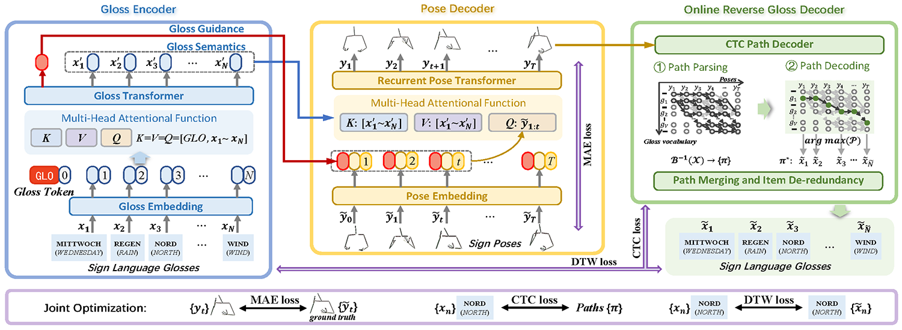

|
SHENGENG TANG 唐申庚
Ph.D. Student School of Computer Science and Information Engineering (SCSIE) Hefei University of Technology (HFUT) Email: tsg1995@mail.hfut.edu.cn Link: Google Scholar, CSDN, ZHIHU, GitHub |
Biography
I am a Ph.D student in Laboratory of Multimedia Computing (LMC), under the supervision of Prof. Richang Hong (洪日昌) and Prof. Dan Guo (郭丹). I received the B.E. degree from Hunan Normal University (HUNNU) in 2017. My research interests include image processing and computer vision. Specifically, I focus on Continuous Sign Language Translation (CSLT).
If you are interested in visual understanding and cross-media learning, please visit the homepage of the Visual Understanding Team .
Researches

|
Connectionist Temporal Modeling of Video and Language: A Joint Model for Translation and Sign Labeling Dan Guo, Shengeng Tang, and Meng Wang International Joint Conference on Artificial Intelligence (IJCAI), 2019 [Link] [Paper] [BibTex] [Slides] [Poster] |
|
|
手语识别、翻译与生成综述 Review of Sign Language Recognition, Translation and Generation 郭丹, 唐申庚, 洪日昌, 汪萌 计算机科学 (Computer Science), 2021 [Link] [Paper] [BibTex] |

|
Graph-Based Multimodal Sequential Embedding for Sign Language Translation Shengeng Tang, Dan Guo, Richang Hong, and Meng Wang IEEE Transactions on Multimedia (TMM), 2021 [Link] [Paper] [BibTex] |
|

|
Gloss Semantic-Enhanced Network with Online Back-Translation for Sign Language Production Shengeng Tang, Richang Hong, Dan Guo, and Meng Wang ACM International Conference on Multimedia (ACM MM), 2022 [Link] [Paper] [BibTex] [Poster] [Video] |
Publications
Conference papers:
- Shengeng Tang, Richang Hong, Dan Guo, and Meng Wang, "Gloss Semantic-Enhanced Network with Online Back-Translation for Sign Language Production", ACM International Conference on Multimedia (ACM MM), 2022: 5630-5638. [Link][PDF][BibTeX]
- Dan Guo, Shengeng Tang,and Meng Wang, "Connectionist Temporal Modeling of Video and Language：a Joint Model for Translation and Sign Labeling", International Joint Conference on Artificial Intelligence (IJCAI), 2019: 751-757. [Link][PDF][BibTeX]
Journal papers:
- Shengeng Tang, Dan Guo, Richang Hong, and Meng Wang, "Graph-Based Multimodal Sequential Embedding for Sign Language Translation", IEEE Transactions on Multimedia (TMM), 2021. [Link][PDF][BibTeX]
- Dan Guo, Shengeng Tang, Richang Hong, and Meng Wang, "Review of Sign Language Recognition, Translation and Generation", Computer Science, 2021, 48(3): 60-70. [Link][PDF][BibTeX]
Monographs:
- Dan Guo, Shengeng Tang, Richang Hong, and Meng Wang, "Sign Language Recognition", Multimedia for Accessible Human Computer Interfaces. Springer, Cham, 2021: 23-59. [Link][PDF][BibTeX]
Patents:
- 郭丹; 唐申庚; 刘祥龙; 洪日昌; 汪萌; 一种基于图卷积的多模态融合手语识别系统及方法, 2020-1-16, 中国, CN202010049714.7. (实审)
- 郭丹; 唐申庚; 刘祥龙; 汪萌; 一种基于多层次语义解析的手语翻译系统及方法, 2020-2-20, 中国, CN202010103960.6. (实审)
- 郭丹; 谷纪豪; 唐申庚; 肖同欢; 曹晨曦; 宋万强; 一种基于深度智能交互的室外视障辅助方法, 2022-4-11, 中国, CN202210371804.7. (实审)
- 郭丹; 曹晨曦; 肖同欢; 唐申庚; 谷纪豪; 黄滨; 一种基于语义分割的择优式方向偏移预警系统和方法, 2022-4-11, 中国, CN202210374860.6. (实审)
- 郭丹; 刘泽宽; 郭义臣; 唐申庚; 武梓龙; 文则涵; 陈颖男; 一种基于深度学习的WiFi手语翻译系统及方法, 2022-7-8, 中国, CN202210805408.0. (申请)
Software copyright:
- 郭丹; 唐申庚; 陈颖男; 武梓龙; 文则涵; 刘泽宽; 基于关键点估计的人体姿态卡通化系统 V1.0, 2022SR0771364, 原始取得, 全部权利, 2022-03-20.
Experience
- 2017.06 - present, Ph.D student, School of Computer Science and Information Engineering (SCSIE), Hefei University of Technology.
- 2013.09-2017.06, B.E, College of Information and Engineering (CISE), Hunan Normal University.
Professional Services
- Reviewer for 37th AAAI Conference on Artificial Intelligence (AAAI 2023)
- Reviewer for 30th ACM International Conference on Multimedia (ACM MM 2022)
- Reviewer for 17th European Conference on Computer Vision (ECCV 2022)
- Reviewer for 19th Pacific Rim Conference on Multimedia (PCM 2018)
- Reviewer for Neural Networks, Elsevier
- Reviewer for Neurocomputing, Elsevier
Link
- Conferences Links: International Conferences on Machine Learning and Artificial Intelligence.